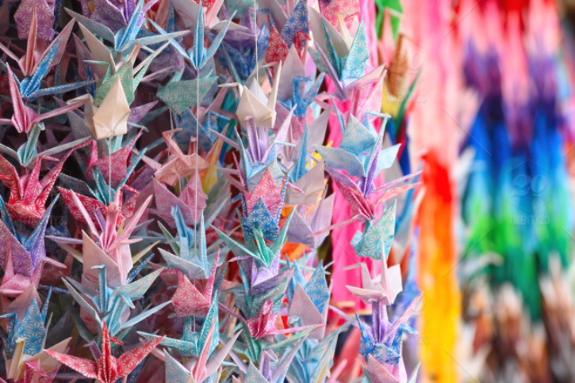
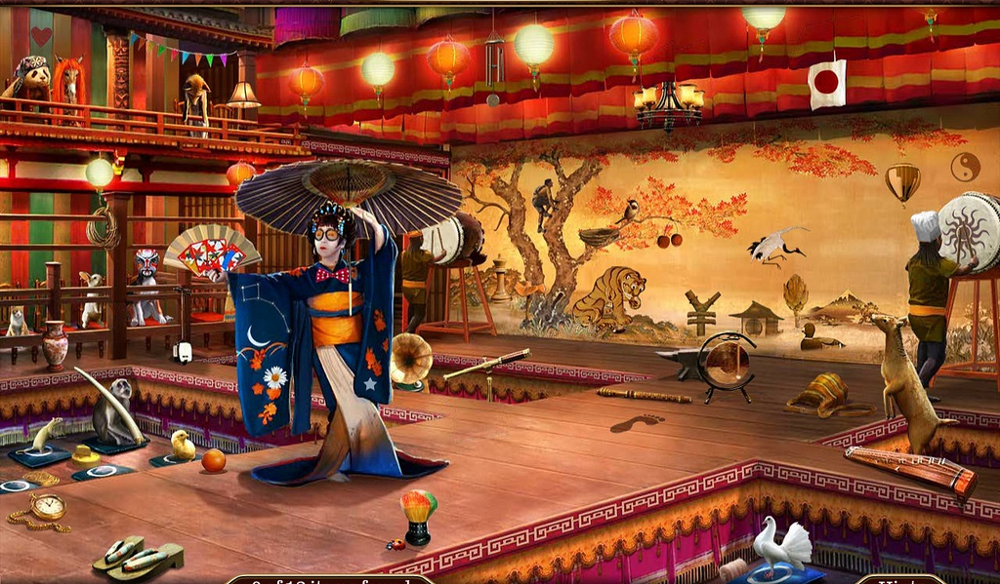
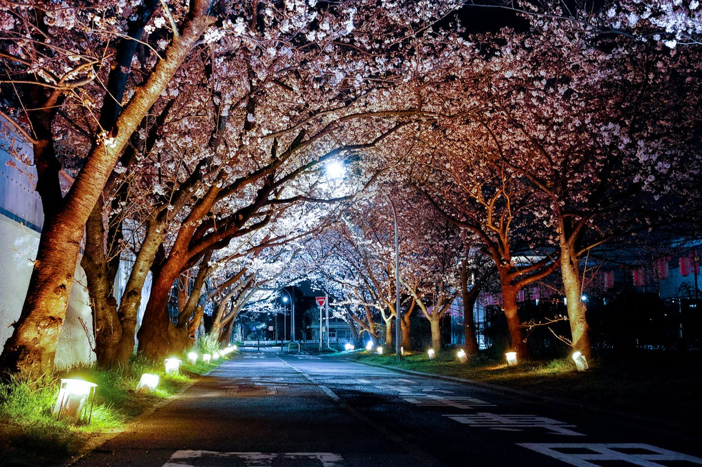

CULTURE
Kon'nichiwa
Not only is Tokyo the capital of Japan but it is also the cultural hub. Japanese culture has been influenced by other cultures: Chinese, Korean, Greek, Indian, European and American. From these along with the Jormon culture of the people who resided in what is now considered Japan, the Japanese have created a rich and unique culture that many people across the world adore and admire.
Accustom Yourself
Although Tokyo has come to be known as a city for its amazing electric advertisements and technology, a lot of the culture that is still practiced today stems from the traditional roots of Japan. Here are some of the cultural arts you will find when you visit Tokyo:
Origami
- Origami is the art of making objects by folding paper. The word itself stems from two Japanese words, "ori" which means "to fold" and "gami" which means "paper". There is an old Japanese belief that if one is able to fold a 1,000 paper cranes that their dream would come true; this act was known as "senbazuru". Over time, the paper crane became a symbol of hope and healing during trials.
- Ikebana is the art of arranging flowers. It goes beyond simply placing flowers in a vase; it is a disciplined art in which the floral arrangement is symbolic of nature and humanity uniting. It originated during the 6th Century when Ikebana was offered at Buddhist altars.
- For nearly four hundred years, this performing arts form has existed in Japan. Kabuki is a highly stylized form of drama that is steeped in tradition. It infuses music, dance, mime alongside elaborate staging and costume design. 
- The Japanese celebrate many things in their culture and they commemorate and honor those things by throwing festivals. In Tokyo, you can attend festivals that celebrate the start of the New Year to those with religious causes also known as matsuris. The most popular festival that takes place in Tokyo is the Cherry Blossom Festival that occurs every April at the height of Cherry Blossom season. The festival is a celebration of winter's ending and spring's arrival. Many will gather under Sakuris, or Cherry Blossoms, to picnic and socialize as they marvel at the sight of these beautiful trees. 